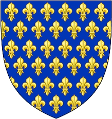

Duke, Markgreve, Greve Se Notering!. Blev högst 46 år.
820 Anjou, France. [1]
866 Brisarthe, Les Hauts-d´Anjou, France. [1]
Robert den Starke var:
Duke of Francia, Margrave of Neustria, Count in Wormsgau, Count of Angers, Count of Anjou, Count of Auxerre, Count of Blois, Count of La Marche, Count of Nevers, Count of Orléans, Count of Paris, Count of Tours, Abbé laïc de Marmoutier, Duke of France
Robert den Starke ( ca 830 – 866) var far till två kungar av Västfrankien: Odo (eller Eudes) och Robert I av Frankrike . Hans familj är uppkallad efter honom och kallas Robertianerna . År 853 utnämndes han till missus dominicus av Karl den skallige , kung av västra Frankrike . Robert the Strong var farfarsfar till Hugh Capet och därmed förfader till alla capetianerna .
Ursprung och uppkomst till makten
Föräldraskapet till Robert "le Fort" är oklar. Även om mycket lite är känt om den Robertianska familjens början, har spekulativa förslag lagts fram. Enligt ett förslag var Robert en son till Robert III av Worms . [1] [2] Mycket mer spekulativt, huvudsakligen baserat på användningen av namnet Robert, eller liknande namn, har det föreslagits till exempel att hans familj hade sitt ursprung i Hesbaye -regionen i nuvarande östra Belgien, eller kanske härstammade från familjen Chrodegang av Metz . Dessa förslag är dock obevisade. [ citat behövs ]
Enligt Worms förslag emigrerade den robertianska familjen under Ludvig tyskens regering i Östfrankien från Östfrankien till Västfrankien . Efter deras ankomst till sitt rike belönade Charles the Bald familjen som hoppade av hans fiende genom att tilldela Robert lekmannaabbatet Marmoutier 852. Och 853 beviljade han positionen som missus dominicus i provinserna Maine , Anjou och Touraine till Robert , vilket ger honom de facto kontroll över den antika ducatus Cenomannicus , ett stort hertigdöme centrerat på Le Mansoch motsvarande det gamla riket av regnum Neustriae . Roberts uppgång kom på bekostnad av den etablerade familjen rorigoniderna och var utformad för att stävja deras regionala makt och för att försvara Neustrien från vikinga- och bretonska räder. [ citat behövs ]
Revolt
År 858 gick Robert med i ett uppror mot Karl den skallige. Med bretonerna under Salomon ledde han de frankiska adelsmännen i Neustrien och bjöd in Ludvig tysken att invadera Västfrankien och ta emot deras hyllning. Revolten hade utlösts av en äktenskapsallians mellan Karl och Erispoe , kung av Bretagne , och av Karls son Ludvig stammarens investering med regnum Neustriae , vilket avsevärt inskränkte både Salomons och Roberts makt. Charles hade gett Robert grevskapen Autun och Nevers i Bourgogne; och 856 hade Robert försvarat Autun från Ludvig tysken. Men efter Erispoes mord i november 857 gjorde han och Salomon uppror mot Charles. [ citat behövs ]
Roberts neustrianer jagade Ludvig stammaren från Le Mans 858. Senare samma år nådde Ludvig den tyska Orléans och tog emot delegationer från de bretonska och neustrianska ledarna, såväl som från Pepin II av Aquitaine . År 861 slöt Charles fred med Robert och utnämnde honom till greve av Anjou . Därefter försvarade Robert framgångsrikt den norra kusten mot en vikingainvasion. [ citat behövs ]
År 862 beviljade Karl Ludvig Stammeraren, sin son, den helige Martin av Tours lekmannaabbat - en värdig förmån men liten i jämförelse med det kungadöme han hade fått 856 och förlorade 858. Den unge Ludvig gjorde uppror och blev vän med Salomon som försåg honom med trupper, startade krig mot Robert. [ citat behövs ]
År 862 konvergerade två vikingaflottor mot Bretagne; den ena hade nyligen tvingats ut ur Seine av Karl den skallige, den andra var på väg tillbaka från en Medelhavsexpedition . Salomon anlitade medelhavsflottan för att härja i Loiredalen i Nuestria. [3] Robert fångade tolv av deras skepp och dödade alla ombord utom några som flydde. Han anlitade sedan de tidigare Seine-vikingarna för att attackera Salomons rike för 6 000 pund silver. [ citat behövs ]
Roberts uppenbara syfte var att hindra vikingarna från att tjäna Salomon. [a] Han tog antagligen in ett stort belopp i skatt för ett (icke -bidragande ) Danegeld för att betala för att hålla vikingarna borta från Neustrien. [b] Men freden mellan frankerna och vikingarna varade inte länge: 863 slöt Salomon fred, men vikingarna, som nu berövats fiendens land att plundra, fortsatte med att härja Neustrien. Charles gjorde nu Robert Lay till abbot för det inflytelserika klostret St. Martin i Tours . [4]
Robert krigade med Pepin II under sina senare år. År 863 försvarade han åter Autun från Ludvig tysken; han kampanjade i Neustrien 865 och igen 866, kort före sin död, och handlade om bretoner och vikingar som härjade i Le Mans omgivningar. [ citat behövs ]
Död och arv
"Robert den starka i slaget vid Brissarthe" (Jules Cesbron-Lavau, ca 1914)
Den 2 juli 866 dödades Robert i slaget vid Brissarthe medan han försvarade Francia mot ett gemensamt bretonsk-vikingatiskt plundrparti ledd av Salomon, kung av Bretagne och vikingahövdingen Hastein . Under striden blev vikingabefälhavaren instängd i en närliggande kyrka. Robert tog bort sin rustning för att börja belägra kyrkan; Vikingarna inledde sedan en överraskningsattack och Robert dog i den efterföljande närkampen. [4] Han lämnade efter sig en nioårig son, Odo (som senare skulle bli kung av Frankrike), som hans arvtagare. Hans heroiska framgångar mot vikingarna ledde till att han karakteriserades som "en andra Maccabaeus " i Annales Fuldenses . [ citat behövs ]
Familj
Robert gifte sig med Adelaide av Tours , dotter till Hugh av Tours . [4] De hade:
Odo av Frankrike (c.857–898), kung av Västfrankien [1]
Robert I av Frankrike (c.866–923), kung av Västfrankien. [1]
Anteckningar
Robert förväntade sig förmodligen att Salomon skulle anlita dem för att ersätta de besegrade medelhavsvikingarna, för att sedan anfalla Neustrien från två sidor: med vikingaskepp som bestigade Loire och de bretonska trupperna invaderar landvägen.
År 860–1 hade Karl den skallige samlat in en allmän skatt för att betala en danegeld på 5 000 pund. Kungen hade förmodligen godkänt Roberts betalning.